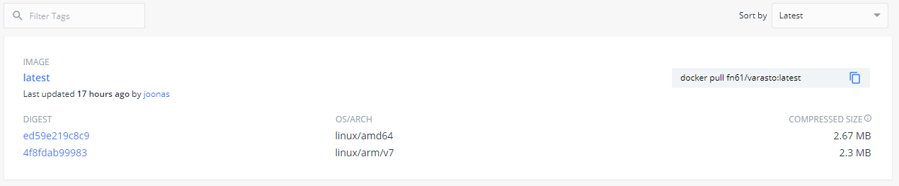
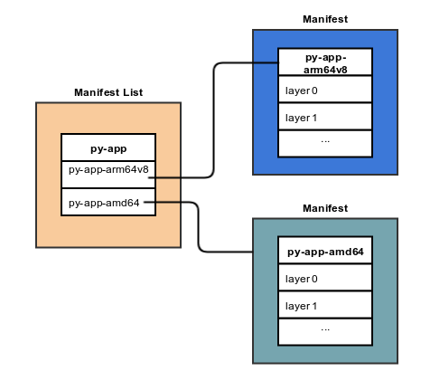
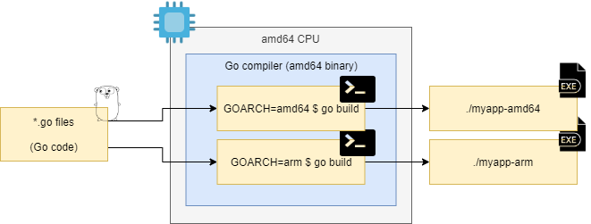
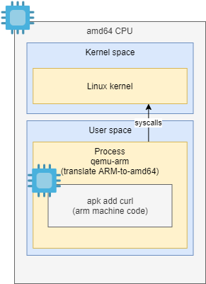
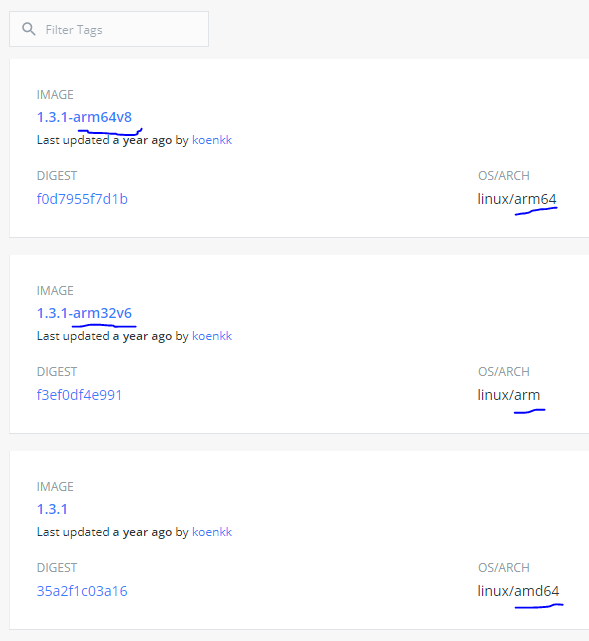

Docker multi-arch image tooling, buildx
Multi-arch image means that you can run the same $ docker run joonas/cool-app command on
different hardware platforms like PC (amd64) and Raspberry Pi (arm). Recently
when publishing said style images for
Varasto, I learned quite a lot about the tooling and some
tricks. But I was really frustrated about the shortcomings, so I want to share my findings to
make it easier for others!

Tip: lots of what I’m writing about is found from this excellent post (which is more superficial, but probably better :D).
Manifest list
You’re probably used to the concept of Docker images. You can think of Docker multi-arch image as a virtual image that only consist of metadata - pointers to the concrete images for specific architectures:

(Credit: image from ONAP.org)
The manifest list is simple JSON and looks like this:
$ docker manifest inspect joonas/multitest
{
"schemaVersion": 2,
"mediaType": "application/vnd.docker.distribution.manifest.list.v2+json",
"manifests": [
{
"mediaType": "application/vnd.docker.distribution.manifest.v2+json",
"size": 735,
"digest": "sha256:ed59e219c8c9038bab91d528a4cec0287ca75d441fc6d9dc62c4df3aaf5f6ae8",
"platform": {
"architecture": "amd64",
"os": "linux"
}
},
{
"mediaType": "application/vnd.docker.distribution.manifest.v2+json",
"size": 735,
"digest": "sha256:4f8fdab999838ba5e5e3193f841fd42f6226934e2260a51f6100515345e27f60",
"platform": {
"architecture": "arm",
"os": "linux",
"variant": "v7"
}
}
]
}
NOTE: sometimes manifest lists are confusingly referred to as just “manifest” (e.g.
$ docker manifest create actually creates a manifest list), but manifest list and
manifest are different things:
- Each concrete Docker image has a manifest, so manifest ≈ image.
- So this multi-arch “virtual image” is a manifest list (or an “image list” if you will).
Cross compilation is not the same as building cross-architecture images
There are three distinct things at play:
- Cross compiling your binary
- Running binaries having foreign architecture
- Building Docker images for foreign architectures
2 and 3 are related because most of the time (but not always) 3 requires 2.
Let’s start with cross compilation. Say you’re on your local amd64-based PC (or a public
CI) compiling a Go program. Cross compilation, depending on your language/compiler, can be
really easy:
$ GOARCH=amd64 go build -o myapp-amd64
$ GOARCH=arm go build -o myapp-arm
Your CPU running on amd64 just used the Go compiler to produce machine code for amd64
and arm CPUs:

A Go compiler running on any architecture can produce machine code for foreign architectures.
Now we’ve covered cross compilation. We’ll cover 2 and 3 next!
Run machine code having foreign architecture
Running amd64 programs on my computer (that has an amd64 CPU) works:
$ ./myapp-amd64
Hello world from amd64
But running arm programs on my computer doesn’t work (it has foreign architecture):
$ ./myapp-arm
./myapp-arm: cannot execute binary file: Exec format error
Building images for foreign architectures
Really simple Dockerfile
Even though you can’t run the arm binary, you could still build a really simple Dockerfile:
FROM --platform=linux/arm/v7 alpine
CMD ["/myapp"]
ADD myapp-arm /myapp
The --platform is needed because I’m building on amd64 and Docker build would pull
the wrong (builder machine’s) architecture version of alpine image.
(This flag is not needed in buildx, which we’ll cover later, because it’s
cross-architecture build aware.)
Building this succeeds on any architecure.
The image works on an arm based system.
But the image doesn’t work if ran on an amd64 system:
$ docker run --rm -it joonas/myapp-arm
standard_init_linux.go:211: exec user process caused "exec format error"
This is expected because, like we covered earlier, running the binary needs to match your CPU architecture.
More complex Dockerfile
In almost any real-world Dockerfile we need more complex things, like RUN instruction.
This is an instruction which at build-time runs binaries.
This example asks Alpine’s package manager to install curl:
FROM --platform=linux/arm/v7 alpine
CMD ["/myapp"]
ADD myapp-arm /myapp
RUN apk add curl
We only added the RUN ..., and now building the image fails:
$ docker build -t joonas/myapp-arm .
...
Step 4/4 : RUN apk add curl
---> Running in b31128b76d15
standard_init_linux.go:211: exec user process caused "exec format error"
The command '/bin/sh -c apk add curl' returned a non-zero code: 1
This doesn’t work, because like our-built binary, also other binaries inside Alpine’s arm
image, are of foreign architecture.
The road to solution
Two paths:
- Build each arch image on a different, its native, CPU
- Use tricks to cross-build on
amd64
Most of us can’t afford (or don’t want) to set up a multi-arch cluster of Docker build servers, so what tricks we have at our disposal to cross-build on our existing architecture?
You may have heard of virtual machines. Virtual machines are a subcategory of emulators that choose to emulate the entire computer.
A popular solution for quite some time has been to use QEMU’s user space emulation to not emulate entire computer, but to only emulate foreign architecture processor on a Linux process level:

It’s basically a virtualized processor, but inside a single (user-space) process. It doesn’t have to virtualize full PC hardware - only the CPU and for only a “small distance” so that it can interact with things outside the process via traditional interfaces like kernel syscalls.
This is the basic premise of it. There have been variations to this basic approach, in increasing convenience order:
- Add boilerplate to
Dockerfileto enable shell-shim (to redirect shell-based process invocations to QEMU) and add QEMU inside your image (this doesn’t require config to host kernel)- For example usage see this balena.io link
- Self-installed QEMU & configured
binfmt_misc- For example usage see this balena.io link (same link as above)
- Docker’s buildx
- Wraps the option 2 (= QEMU +
binfmt_misc) with automation, but also does a bunch more
- Wraps the option 2 (= QEMU +
binfmt_misc is Linux kernel’s interface for communicating to kernel: “if you see an unsupported
binary type that looks like X => use interpreter Y to indirectly execute it”.
In this case we’ll use binfmt_misc to pipe foreign architecture binaries via QEMU. You
can read more about binfmt_misc specifically in
JessFraz’s blog post.
Solution
I don’t like the idea of putting any boilerplate in the Dockerfile, so IMO using
binfmt_misc is cleanest. Approaches 2 and 3 are both fine, but I ended up with buildx
for somewhat unrelated reasons - more on this later.
Building images for foreign architectures
We’ll now be covering Docker’s buildx more closely.
What is buildx
buildx touts itself as a kind of a frontend for BuildKit. BuildKit seems to be Docker’s next-gen build system with configurable builders, builder clustering, cross-architecture image building etc.
Why buildx (avoiding tag-per-arch)
buildx seems pretty complex, and it’s an addon (= not built-in inside Docker) that requires extra steps to setup in CI systems like GitHub actions.
I originally planned on just adding QEMU download + binfmt_misc support to
Turbo Bob, have separate Dockerfiles per
arch, build them manually and then join them into a single manifest list using
manifest create. No buildx required?
The problem is that it looks like it’s not possible to use manifest create without
having tag-per-arch in DockerHub.
Tag-per-arch looks like this:

It looks like it really goes against the grain for manifest create to give me what I want.
I later discovered that while manifest create supports creating manifest list from
digests, I haven’t found out how to docker push with only a digest - only buildx seems
to support pushing by digest.
I say this because manifest create requires the referenced images to already exist
in the remote registry (and within the same repo), and web search for “docker push by
digest” came practically empty.
Buildx seems
to really well support push-by-digest (required for avoiding tag-per-arch) - but it
looked like push-by-digest is available only if you use its full automation. By “full
automation” I mean building all arches with a single build command instead of building each one
manually - maybe even from separate Dockerfiles.
What’s wrong with the full automation? I’ll cover that in a separate section later.
Despite searching it looked like push-by-digest is only usable via full automation, but fortunately I later learned via a pro-tip from the dev that there’s a flag for it that might be usable with a more broken down and controllable workflow. Though it looks like I’d still need buildx to use push-by-digest since it looks like native Docker can’t do it.
Looks like I need buildx anyway, so maybe just embrace it?
Setting up buildx
(if trouble) This post explains it better
After installing buildx, it might have to be enabled with experimental flag:
$ export DOCKER_CLI_EXPERIMENTAL=enabled
$ docker buildx version
After that works, you might still need to run this command to set up the binfmt_misc configuration
that we discussed earlier:
$ docker run --rm --privileged docker/binfmt:66f9012c56a8316f9244ffd7622d7c21c1f6f28d
Build with buildx
Basic format of cross-arch building is:
$ docker buildx build \
--platform platformA,platformB,.. \
--file Dockerfile \
--tag yourname/project:latest \
.
Frustrations with buildx
tl;dr: too much automation with assumptions about the build process. In my opinion I had about the simplest of use cases one can have:
- I have pre-built binaries:
rel/myapp-amd64andrel/myapp-arm
- Shove them inside architecture-specific Alpine base image and call it done
Still it seemed like I needed lots of hacks to work around the assumptions. The simplest solution I came up with was to use a multi-stage build to rename the binary-to-add to a name buildx expected:
FROM alpine
# need to list this to have it available at all
# "linux/amd64", "linux/arm/v7", etc.
ARG TARGETARCH
ARG TARGETVARIANT
ADD "/rel/myapp-$TARGETARCH$TARGETVARIANT" /myapp
CMD ["/myapp"]
I know, I could’ve as a hack named my source binaries in my workdir with a name buildx
expects to support my use case, but I didn’t want to do that because I upload the rel/
directory to GitHub releases as well.
I also got a
good pro-tip from the dev
that instead of having to have my binaries named linux/amd64 and linux/arm/v7 I
get slightly more control with $TARGETARCH and $TARGETVARIANT (though that still
forces some of my naming convention)
These variables are documented here.
All my frustration could’ve been avoided, if buildx:
- supported separate
Dockerfileper arch OR - supported specifying build-arg per arch OR
- supported mounting my
rel/directory inside the build container OR - supported making & pushing manifest list from local images I built manually with
$ docker build
To top my frustrations off, it was easy to end up with seemingly-successful buildx
commands where after build
there simply wasn’t a build artefact.
tl;dr: --output=type=image works as long as you’re building for one arch, but if you
need multi-arch the output silently doesn’t go anywhere because local multi-arch images
are not supported. Currently you simply have to learn these quirks the hard way (I
would’ve preferred an error).
Trick: copying manifest lists (e.g. promoting a release to :latest)
When I make commits to my repo, CI builds will make a draft/dev release in Docker registry with tags like these:
- joonas/multitest:20200527_1510_4752c84f
- joonas/multitest:20200101_1359_7fd6f47d
When I want to make an official release, I “promote” (= copy) an existing tag to the latest
tag. I.e. I need to make a copy of the manifest list.
(I can’t just pull 20200101_1359_7fd6f47d, tag it latest and push it again, because
$ docker pull doesn’t pull the manifest list - rather it resolves the concrete image (= manifest)
to pull, based on the arch I’m pulling for.)
In this example we’ll copy 20200527_1510_4752c84f -> latest.
To copy a manifest, the easiest trick I’ve come up with is to inspect existing manifest, take note of the digests (see the JSON example at beginning of this post) and use them to create a new manifest:
$ docker manifest inspect joonas/multitest:20200527_1510_4752c84f
$ docker manifest create joonas/multitest:latest \
joonas/multitest@sha256:ed59e219c8c9038bab91d528a4cec0287ca75d441fc6d9dc62c4df3aaf5f6ae8 \
joonas/multitest@sha256:4f8fdab999838ba5e5e3193f841fd42f6226934e2260a51f6100515345e27f60
$ docker manifest push joonas/multitest:latest
That’s it! It’s been copied. Of course you can automate this by parsing the JSON and extracting the digests to automatically run the create & push commands.
Recap
There were quite many concepts to understand:
- Docker manifest lists (= virtual images) vs. manifests (= images)
- These are different concepts:
- Cross compiling binaries (easy as pie with Go)
- Building Docker images for foreign architectures
- Running binaries for foreign architectures
- Image building can be easy (no special tools needed) if you don’t need
RUN, but usually you do - then you need tricks to execute code for foreign architectures. - QEMU userspace emulation +
binfmt_miscis a neat trick to ~easily produce multi-arch images when you needRUNdirective - Tagged images vs digest-only images (buildx is needed to push digest-only images)
- Buildx is one tool more that you need to install and configure on your computer and on CI systems.
- Buildx seems to make many assumptions, and it can get painful if you don’t fully embrace its
“this is how you’re supposed to hold the tool” -model
- I hope buildx becomes more relaxed as it matures

Thanks for reading! 😍
If you like my writing, consider following me on Twitter.
Stay updated on my blog posts & projects - sign up for
my newsletter. 🚀
No spam, unsubscribe any time.
RSS also available.